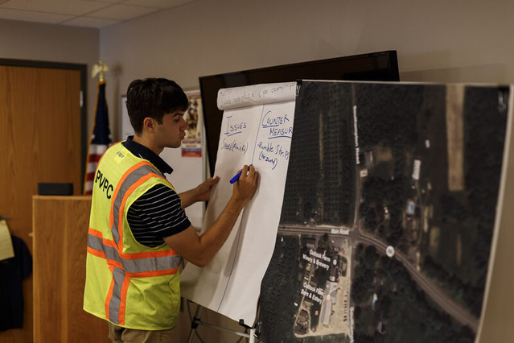

Why Transportation Planning is Important
Transportation planning helps communities improve road safety, traffic flow, and accessibility for everybody, including drivers, pedestrians, and cyclists.
Examples of Improvements:
- Sidewalk construction
- Bike lanes
- Traffic calming
- Improved signage
Planning Process:
- Collect data
- Analyze roadway conditions
- Meet with stakeholders
- Develop recommendations

Learn more at the U.S. Department of Transportation or visit NACTO.